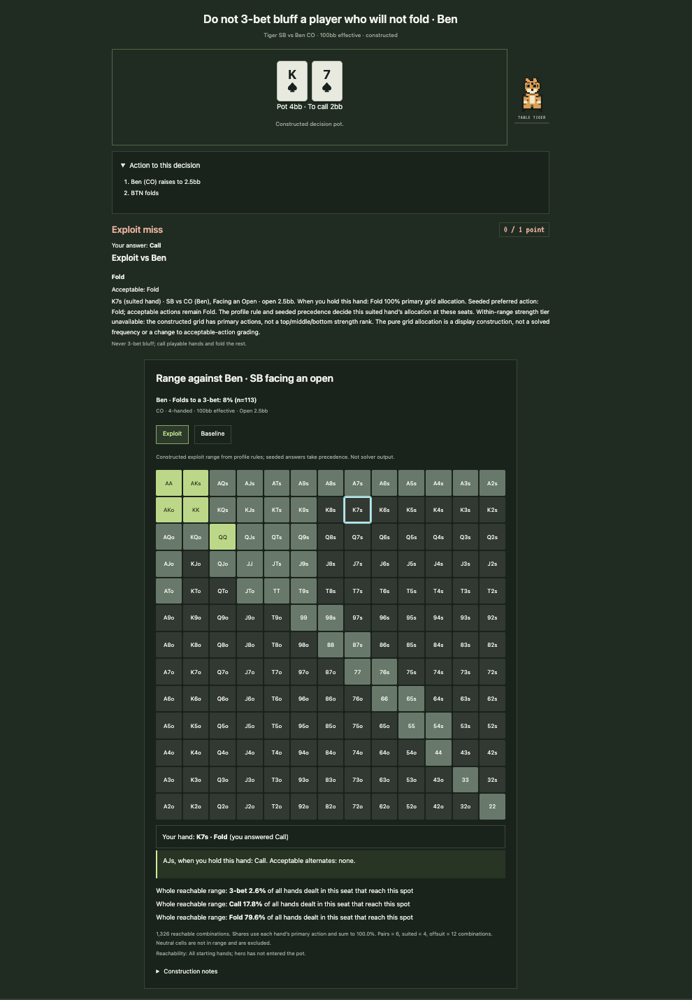

Pot Geometry · Building with AI (Fall 2026)
Product Showcase (Prototype / Live App / 2-Min Video)
Current Status: Build 4: the app is live at
potgeometry.com (hosted through ChatGPT Sites; Squarespace holds only the domain's DNS). Build 4 was a user-testing build (Track B): a first-time user test drove six fixes, listed in the Build 4 log below, all verified live after shipping. The full security audit is written up in
SECURITY.md at the top of the repo. The app code in this repo sits under app/; the live site can be ahead of the repo, and the repo is the version history used for rollback. PostHog analytics and session replay are running in the app and on this page.
Demo:

Living PRD (Product Requirements Document)
Updated every week as we test with real users and learn what works.
1. Target User & The Job to Be Done
Who is this for? A regular in a recurring home game (the builder is the first user) who plays against the same opponents every week and wants to prepare for those specific players, not for a theoretical optimal opponent.
The painful "Before" workflow: Study means reviewing generic preflop charts and solver ranges that assume opponents play near-optimally. Against home-game regulars who 3-bet 25% of the time, or fold to a 3-bet over 90% of the time, the generic answer is often the losing answer. Reads on each opponent live in scattered hand histories and memory, and never turn into structured practice.
The "After" workflow with this product: The trainer holds a profile per villain, built from tracked hands with frequencies and sample sizes. In one sitting the user picks a villain, drills spots in the exact situations that villain creates, gets graded feedback tied to the underlying stat, and reviews mistakes by category. Study time goes directly at the players they will face this week.
2. Scope & Explicit Non-Goals
- In Scope (Core Workflow): Select a villain profile, drill villain spots generated from that player's tracked data, receive graded exploit feedback with the stat behind it (frequency and n), and review mistakes.
- In Scope (Build 2, Analytics): Anonymous usage measurement with PostHog. The app sends pageviews and three custom events (mode selected, drill answered with correct or incorrect, drill completed) to PostHog; this page sends pageviews. No accounts and no personal data; progress still lives only in localStorage.
- Out of Scope #1: Not a solver. No real-time solving or GTO computation; all ranges are precomputed reference data.
- Out of Scope #2: No real-money play, no online-site integration, and no live in-game assistance of any kind.
- Out of Scope #3: No accounts or cloud sync in this build. Progress is stored locally in the browser with export/import.
3. How It Works Under the Hood & Riskiest Assumption (Week 2+)
Riskiest Assumption: Villain profiles are only as good as the tracked hand data behind them. Small samples mislead, so every stat in the app is displayed with its sample size, and profiles must keep being fed new hands to stay accurate.
Simple Architecture: [User picks a villain and mode] → [Static web app (HTML/CSS/JS, no server)] → [Bundled JSON data: preflop charts, villain spots, learn cards] → [Graded drill feedback; progress saved in browser localStorage] → [Anonymous usage events sent to PostHog: mode selected, drill answered, drill completed]
4. Unit Economics & Analytics Snapshot (Updated Weekly)
- Cumulative Build Spend: $0 in new spend. Hosting is static (ChatGPT Sites at potgeometry.com; this page is on GitHub Pages); AI build tools are existing subscriptions.
- Est. Cost Per User Run: $0. The app is fully static with no runtime inference or API calls.
- User Evidence (Analytics from Build 2): PostHog snippet installed on this page in Build 2; app-side custom events (mode selected, drill answered, drill completed) shipped in trainer v22.
- Sponsor Call (Week 6): TBD
5. Hosting, Data & Security Decisions (PRD v3, Build 3)
- Hosting: The app is served as static files through ChatGPT Sites at the custom domain potgeometry.com. Squarespace holds the domain registration and DNS only; it does not host the site. There is no build step and no staging environment: edits publish straight to the live site, so the repo's GitHub history is the rollback path. This page (the Product Page) is hosted separately on GitHub Pages.
- Database: None, by decision. There is no server and no accounts. Study content ships as bundled JSON files with the site; everything a visitor creates (drill progress, settings, imported ranges and hand histories) stays in that visitor's own browser localStorage and is never sent anywhere.
- Security: No secret keys exist anywhere in the app, because there is no server for them to live on; a full search of the live code finds only the public PostHog project key, which is write-only by design. All content that comes from imported files is escaped before it is rendered, the progress-backup import validates structure before applying anything, and there is no dynamic code execution anywhere in the codebase. The full audit, check by check, is in SECURITY.md at the top of the repo. One accepted gap: edits publish straight to production with no review gate, mitigated by the GitHub rollback history and by there being no server-side user data at risk.
6. User Testing & Feedback Decisions (PRD v4, Build 4)
Build 4 tested the app with a first-time user given no coaching and one goal: practice poker decisions. The test played a full Quick Drill session, Equity Lab exercises, and Villain Study hands. The findings changed the PRD in four places:
- Entry path is part of the product. The old landing page's "Start drilling" button only scrolled to a mode grid; the first decision took 3 clicks and 60-90 seconds. PRD v4 requirement: the primary call to action starts a drill session in one click. The mode grid remains as the secondary path. (Shipped and verified: 1 click to first decision.)
- Feedback must teach the reason, not restate the chart. Drill feedback previously restated the chart's action ("The chart uses Fold 100% when you hold this hand") with no reasoning a learner could generalize, and carried internal meta-text and a sourcing footnote on every panel. PRD v4 requirement: every drill feedback panel opens with one plain-language reason (hand strength, domination, position, or price); internal meta-text does not ship in user-facing feedback; the range-sourcing disclosure lives once on the Charts page, not under every answer. (Shipped and verified across a full 10-hand session.)
- Result copy must match the score. The results screen showed "STAGE CLEAR" and "A clean session. Nicely played." for a 40% session. PRD v4 requirement: results praise is gated on accuracy (praise at 80% or above; honest copy below 50% that points at the mistakes as the learning material). (Shipped and verified at a 20% session: "Tough session. The 8 mistakes below are where the learning is.")
- Decision screens show the stats the decision is graded on. Villain Study originally showed the villain's stats only in feedback, after the decision. The first fix shipped partially: the decision screen gained a stats region, but it showed a single stat (median open size) drawn from the wrong player's profile. PRD v4 requirement: the decision screen shows the spot's grading-driver stats, from the spot's villain only, each with its sample size, read from the grading rule itself so display and grading cannot drift; thin data is labeled, never backfilled with another stat or another player. (Shipped and verified live across two villains: right player, right stats, feedback consistent with the decision screen.)
What testing confirmed and the PRD now protects: Equity Lab feedback (exact out lists, Rule of 2 and 4 with adjustment, fully enumerated exact equity) is the app's strongest teaching surface and its math verified correct by hand; the 13x13 range grid and the Mistake Review retirement rule (two correct answers in a row) also tested well. These are not to be redesigned in later builds.
Accepted limitation, recorded openly: The baseline reason sentences in drill feedback are templated per spot type (the same wording recurs with the hand and position swapped). They satisfy the teach-the-reason requirement; varying them further is polish, deferred past Build 4.
Weekly Build Log
Build on at least two separate days each week outside class, including the November 3 break. All build deadlines are noon, New York time.
Build 1 · Intent.md & Throwaway Prototype (Due Nov 9)
- What shipped: The existing trainer (v13 static build) imported into this repo under
app/, including source files, test scripts, and the built dist/; PRD v1 on this page; screenshot of the running app above. The trainer predates the course; the course work is the repo integration, the PRD, and the weekly builds from here.
- Things learned with AI: Terminal basics, learned while shipping this build: navigating with cd and ls, copying files with cp (quoting paths that contain spaces), and the core git loop of status, add, commit, and push. Also learned to read the output instead of trusting a success message: my first commit silently skipped the built app because of a .gitignore rule, which only showed up in the commit's file list.
- What broke / changed in PRD: The first push silently omitted the entire built app because the repo template's .gitignore ignores
dist/ folders. Caught by reading the commit's file list (16 text files, no app code); fixed with a force-add in a second commit the same day. PRD change: the headline workflow narrowed from general GTO drilling (the app has 11 modes) to villain-specific spot training.
- Cost & time this week: $0.00 · 2 hours
Build 2 · Smallest Local Version & PostHog (Due Nov 16)
- What shipped: Trainer v21 in app/dist: refreshed game data, and corrected opponent merges so each villain's hand history sits under one profile: K Bon merged into Alex, and Crawfish merged into Ruining. Trainer v22 followed in the same build: PostHog analytics added to the app (snippet plus custom events: mode selected, drill answered, drill completed), and the PostHog snippet added to this page.
- What broke / changed in PRD: PRD v2: opponent identities consolidated. The same players were tracked under two names (K Bon / Alex and Crawfish / Ruining), which split their hand histories and skewed the villain reads the trainer drills against. Data correctness took priority over new features in this build.
- Cost & time this week: $0.00 · about 1 hour
Build 3 · Go Live & Security Audit (Due Nov 23)
- What shipped: The app confirmed live at its real domain, potgeometry.com, with the core workflow (pick a villain, drill spots, graded feedback, mistake review) running end to end for a classmate. The product was renamed Pot Geometry on this page. The full security audit was run against the live site's own files and published as SECURITY.md at the top of the repo, and AGENTS.md gained a Shipping section, an Ask me first list, and a rule born from the Build 1 gitignore mistake.
- Things learned with AI: How to audit an app that has no server: most standard checks (row-level security, private storage, spending caps) do not apply, and the real work is the key search and reading the one input surface, the hand-history import, as an attacker. Also learned that a public analytics key is not a leaked secret: the PostHog key can only send events in and cannot read anything back.
- What broke / changed in PRD: Nothing in the app code broke; the audit needed no code fixes. PRD v3 records the decisions this build forced: hosting through ChatGPT Sites with Squarespace as DNS only, no database (bundled JSON plus browser localStorage), and the security posture written up in SECURITY.md. One process gap accepted openly: edits publish straight to the live site with no staging or review step, with the GitHub history as the rollback path.
- Cost & time this week: $0.00 · .5 hours
Build 4 · Test & Improve: Track B, User Experience (Due Nov 30)
- Chosen track: B: outside user testing and findings-driven fixes. (Track A did not apply: the app makes no model calls and generates no AI output to evaluate.)
- Results and improvements: A first-time user test (no coaching, one-sentence goal) played 15 decisions across Quick Drill, Equity Lab, Villain Study, and the Concept Quiz. Top friction points and the fixes shipped for each: (1) "Start drilling" did not start a drill (3 clicks, 60-90 seconds to a first decision); it now starts a Quick Drill in one click. (2) Drill feedback restated the chart without ever saying why an answer was right; feedback now opens with a plain-language reason per spot, and internal meta-text and the per-panel sourcing footnote were removed. (3) The results screen congratulated a 40% session ("STAGE CLEAR"); result copy is now gated on accuracy. Also fixed from the same test: the poker table graphic (jagged staircase outline, now a smooth oval with proper card backs), action labels ("Call" corrected to "Limp" when no bet is faced; a keyboard-shortcut tip added for sizing), the "Rebuild plan" control (now explains itself on hover), uniform sizing for the three Today cards, and Villain Study decision stats (see PRD v4 changes). Every fix was re-tested live after shipping; the Villain Study stats fix needed a second pass (first version showed the wrong player's stat) and was verified across two villains before being counted as done.
- PRD v4 changes: Four evidence-driven changes, recorded in Section 6 above: one-click entry path as a requirement; feedback must teach the reason, with internal text and per-panel footnotes banned from user-facing feedback; results praise gated on accuracy; Villain Study decision screens must show the grading-driver stats for the spot's villain, sourced from the grading rule itself. The test also confirmed Equity Lab feedback, the range grid, and Mistake Review as protected surfaces that later builds should not redesign.
- Cost & time this week: $0.00 · 1 hour
Build 5 · Ship.installer: Launch Ops, Rollback Check & 2-Min Video (Due Dec 7)
- Launch Ops & Safety: [Verified no exposed keys, set spend cap, tested 2-minute rollback]
- 2-Minute Video & Final Polish: [Link/embed above]
- Cost & time this week: $[0.00] · [0] hours